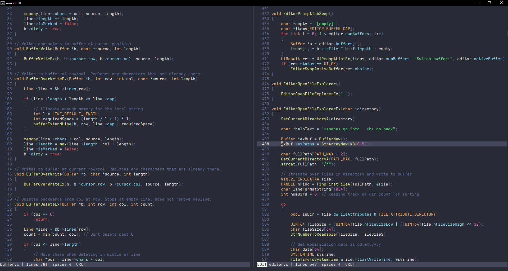

Rum
A minimal editor for the Windows console
Download v1.1.0

About
Rum is a fast and minimal editor that supports syntax highlighting, search, split buffers, tabs and much more! It is specifically made for the windows terminal using the win32 console API. It has no other dependencies than libc and win32, making it very lightweight (~70kb) and easy to build!
Features
✔ Easy to use and install
✔ Super lightweight
✔ No dependencies
✔ Vim keybindings
✔ Sane defaults
✔ Split buffers and tabs
✔ Syntax highlighting and themes
✔ File explorer
✔ 100% Windows native